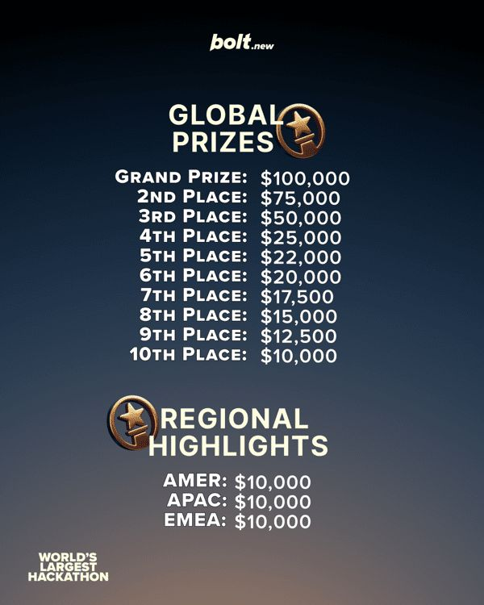

ההאקתון הגדול בעולם מתקרב! ביום שישי הקרוב, ה-30 במאי, bolt.new (פלטפורמה לבניית אפליקציות ווב עם בינה מלאכותית) מארחת את ההאקתון
פורסם במקור ב LinkedIn
ההאקתון הגדול בעולם מתקרב! ביום שישי הקרוב, ה-30 במאי, bolt.new (פלטפורמה לבניית אפליקציות ווב עם בינה מלאכותית) מארחת את ההאקתון הגדול ביותר שנערך אי פעם בעולם!
עם פרס כולל של מעל מיליון דולר (ומקום ראשון שיזכה ב100 אלף דולר) - מה שישבור שיא גינס חדש של כמות משתתפים בהאקתון יחיד.
יריית הפתיחה תהיה בשישי הקרוב, והאירוע יתקיים במשך חודש שלם(!) - 30 ימים בהם יחידים וקבוצות יתחרו ביניהם על האפליקציה הכי מגניבה. בעוד שאין נושא ספציפי, הניקוד ייתן לרעיון מוצלח ולביצוע איכותי וחווית משתמש טובה. התנאי היחיד הוא שהאפליקציה צריכה להיווצר ביום פתיחת ההאקתון ולא לפני.
כחלק מההכנות, הם ערכו תחרות קטנה לבניית אתר ההאקתון, שכבר הציגה כמה מטורפת הולכת להיות התחרות עם הגשות יפהפיות וסופר יצירתיות - רק עבור אתר ההאקתון עצמו.
הקטע הבאמת מיוחד פה הוא שזה לא הקאתון שפתוח רק לאנשי פיתוח אלא לכל אחד בעולם, כי אין כאן דרישה טכנית מורכבת - הכל נעשה דרך הצ׳אט שלהם!
יהיה מעניין! ואם אתם רוצים לקחת חלק באתגר ולהשתתף אז זה האתר של התחרות:
https://hackathon.dev
